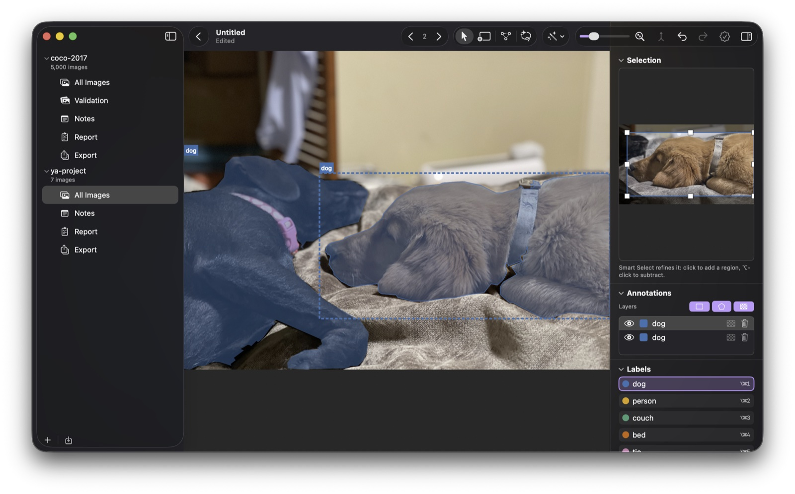

Annotating
The window, the editor canvas, and the day-to-day of drawing, refining, and organizing annotations.
The window
Every yaAnnotator document is a library that holds one or more projects; each project maps to a dataset. The projects sidebar on the left lists them all. Expand a project to choose what the content area shows: All Images, a split (Train, Validation, Test), Notes, the Report, or Export. The + button adds a project or imports a whole dataset as one.
The image list switches between List, Grid, and Single-column views (⌃⌘1/2/3). The Show menu overlays annotations, issue badges, per-kind annotation counts, pixel size, and split names on thumbnails; the Filter menu narrows the list by issues, class, object size, and other report findings. Open an image for editing with Return or a double-click; in List view, Space gives a Quick Look preview instead.
The editor

The canvas is where you label. Zoom with ⌘+/−/0, pinch, or the toolbar slider; scroll or drag to pan. The toolbar holds the tool picker (Select, Box, Polygon, Smart Select), Assist for model suggestions, the zoom controls, the approval seal, undo/redo, and the inspector toggle. You can rearrange the toolbar the standard Mac way, and every toolbar action is mirrored in the menus.
View ▸ Canvas Layers hides whole annotation kinds (boxes, polygons, or masks) while you focus on one; Show Labels (⌃⌘L) hides just the captions.
Drawing
- Box (B): drag to create. With Select (V), drag the 8 handles to resize or the body to move.
- Polygon (P): click to drop vertices; close it by clicking the first vertex, double-clicking, or pressing Return. Esc cancels. With Select: drag a vertex to move it, click an edge to add one, or pick a vertex and press ⌫ to remove it.
- Smart Select (S): click an object and it traces the outline for you, as a polygon (or a pixel mask, with Pro). See Model-assisted labeling.
- Combine (⌘J): ⌘-click several annotations in the Annotations list and merge them into one. Boxes merge into one enclosing box; with a polygon in the mix, the pieces are stitched into a single outline.
- Convert to rotated box (⇧⌘R): replace a polygon, or a multi-selection, with its tightest oriented rectangle. Good for long, angled objects where an upright box would be loose.
- Nudge a selection one pixel with the arrow keys (⇧ for ten); hold ⌥ while dragging to skip edge snapping; drag a marquee on empty canvas to select several annotations.
- Delete with ⌫, and undo anything with ⌘Z.
The inspector (⌥⌘I)
- Selection: a zoomed crop of the selected annotation; drag its handles or vertices to refine.
- Proposals: accept or clear model-suggested annotations.
- Annotations: every annotation on the image with its label and kind (a pixel mask gets a checkerboard icon). Select one to edit, toggle the eye to hide it temporarily, or combine and delete from the list.
- Labels: click a label to make it active for new annotations. Manage the full label set, colors included, in the Label Manager (⇧⌘L).
- Issues: findings from the report that may affect training quality.
Organizing images
- Select many: click, ⇧-click for a range, ⌘-click to add or remove, ⌘A for all. Arrow keys move the selection in every view.
- Set a split: drag selected images onto a split in the sidebar, or right-click ▸ Set Split. Manage splits from the split filter's menu.
- Move between projects: drag images onto another project to copy them in, annotations and all. Cut / Copy / Paste (⌘X / ⌘C / ⌘V) does the same from the keyboard.
- Remove (⌫): takes images out of the project. The original files on disk are never deleted.
Reviewing
- Mark an image approved with the seal button or ⇧⌘A; the Filter menu can narrow to Approved or Not Approved.
- Confirm a truly-empty image with Mark as Null (∅). The report then treats it as a confirmed negative, and export can drop the unconfirmed ones. See Analyze Annotations.
Notes
Each project has a Notes row in the sidebar: a plain-text place for your labeling rules and edge cases. If an imported dataset ships a top-level README, its text seeds the notes automatically; exporting writes them back out beside the dataset as README.yaannotator.txt, so your rules travel with the data.